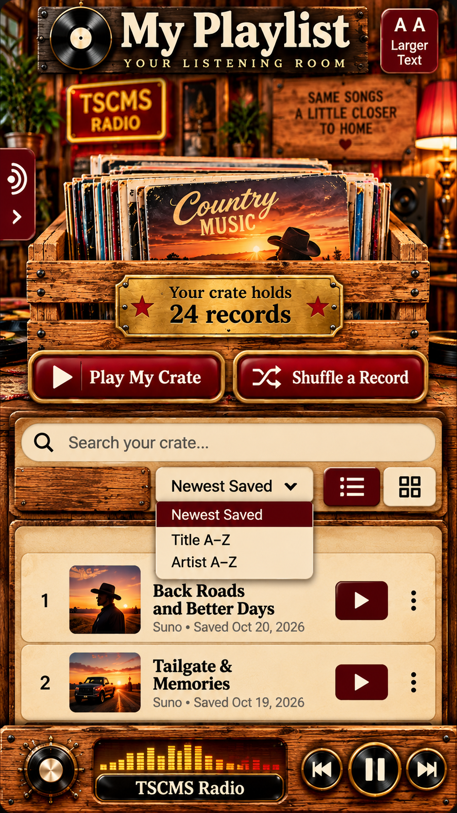

← Back to TSCMS
Your listening room
My Playlist
YOUR LISTENING ROOM

TSCMS
RADIO
SAME SONGS
A LITTLE CLOSER
TO HOME ♥
⌕
Search only your saved songs by title or artist
Sort saved songs
Newest Saved
Title A–Z
Artist A–Z
☷
▦
Checking your sign-in…